Советы
Обслуживание кондиционера
Комплексная диагностика сплит-системы— залог её долговечной и эффективной работы
Читать статьюЗнания и практика
Оборудование, обслуживание и реальные объекты. Делимся опытом работы с климатом.
28 публикаций
Комплексная диагностика сплит-системы— залог её долговечной и эффективной работы
Читать статью
Делимся частичкой первого этапа нашего объекта. У нас в работе квартира площадью 150 м²!
Читать статью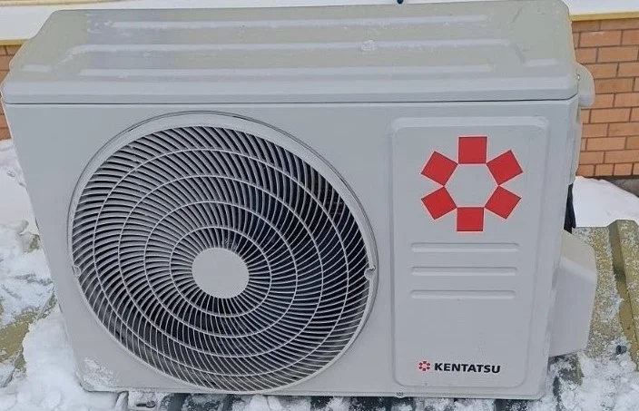
Установили кондиционер Kentatsu модель Kanami Inverter KSGA53HZRN1/KSRA53HZRN1
Читать статью
Делимся прекрасным сочетанием, которое вы можете использовать в вашем интерьере: белый кондиционер на деревянных стенах.
Читать статью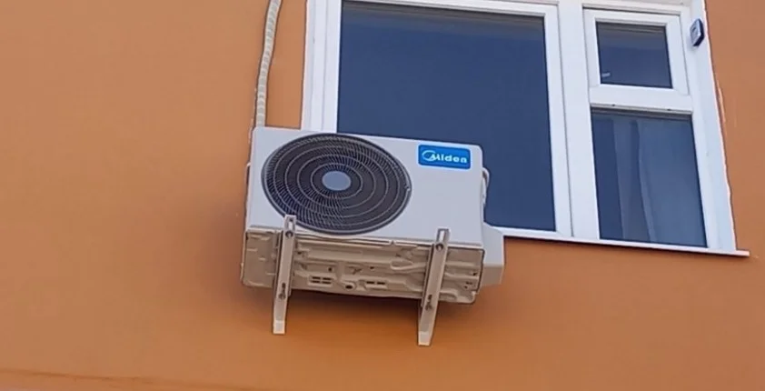
Инверторные кондиционеры имеют несколько преимуществ по сравнению с обычными кондиционерами
Читать статью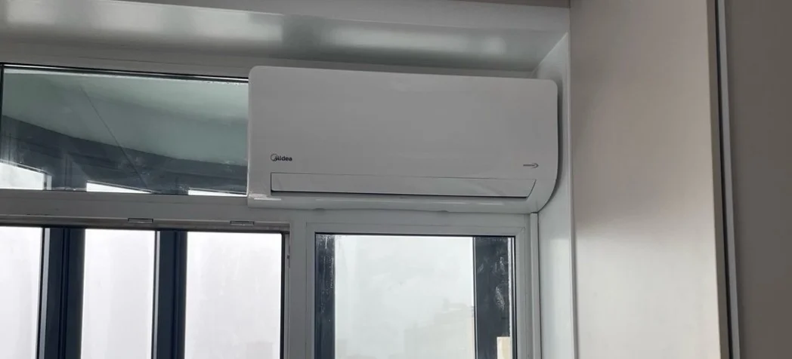
Наши специалисты столкнулись с интересным заданием - установить кондиционер у клиента, у которого уже встроен купе-шкаф у уличной стены.
Читать статью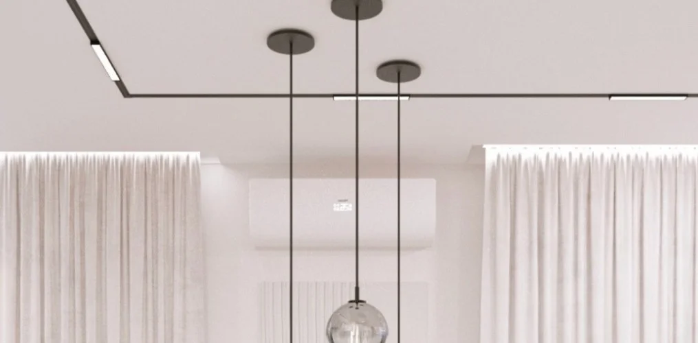
Рады сообщить, что мы начали работу над очередным проектом по кондиционированию!
Читать статью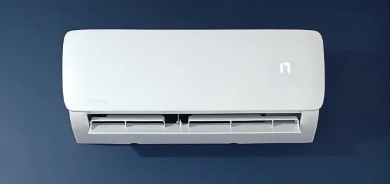
Один из проектов поразил нас своей сложностью и уникальностью
Читать статью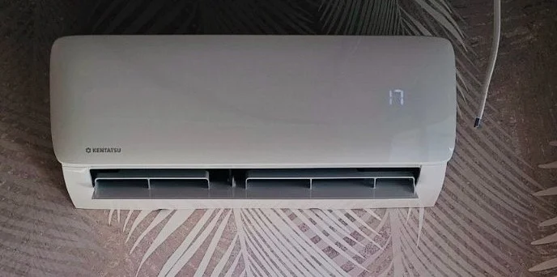
Неделю завершаем примером установки на 2м этапе мультисплит-системы в квартире.
Читать статью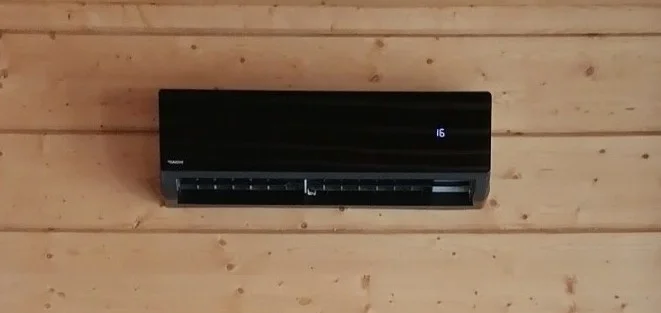
Кондиционер, который обеспечит вам комфорт и уют в любое время года.
Читать статью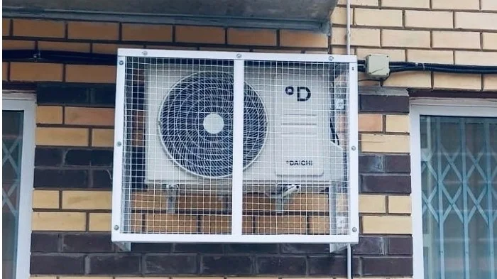
Мы успешно завершили установку двух инверторных кондиционеров в помещении площадью 100 квадратных метров
Читать статью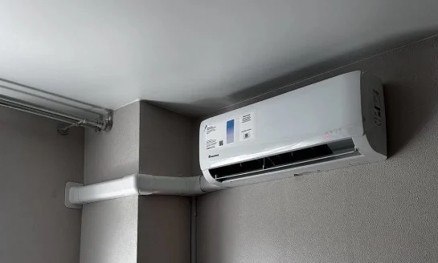
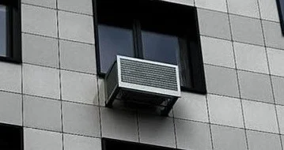
Поставка и монтаж кондиционера Daichi ALPine Inverter ALP25AVQS1R/ALP25FVS1R
Читать статью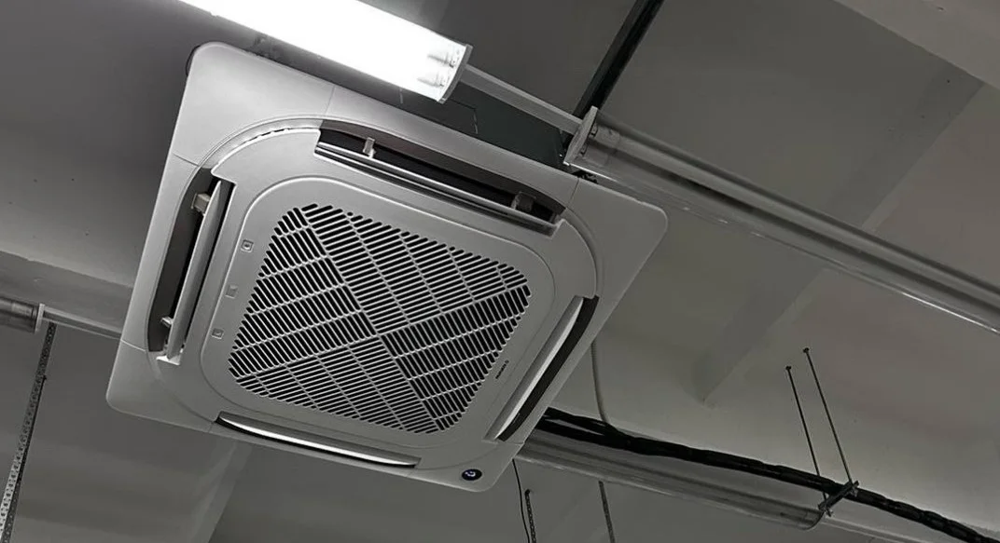
Компания «Климат59» осуществляет поставку и установку полупромышленных кассетных кондиционеров
Читать статью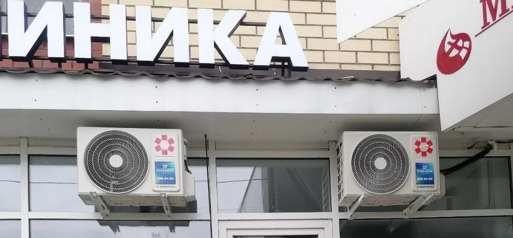
В Медицинском центре РОДЕН-MED климат под нашим контролем
Читать статью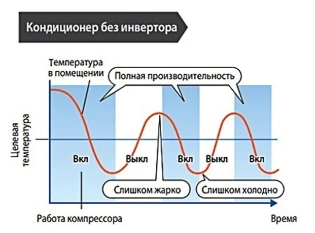
При выборе сплит-системы покупатель сталкивается с дилеммой: взять обычный кондиционер или сплит-систему с инвертором.
Читать статью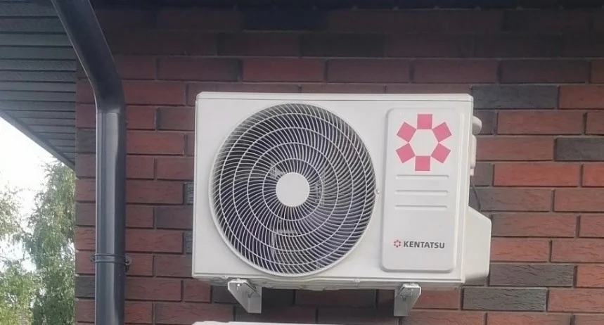
Поставка и установка трех кондиционеров в два этапа: комфорт в вашем доме!
Читать статью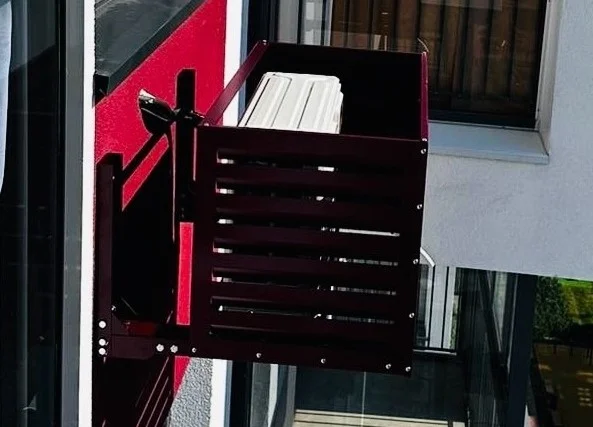
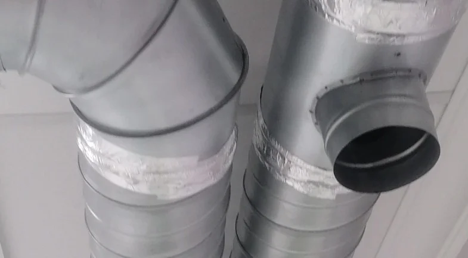
Мы занимаемся не только поставкой и установкой кондиционеров, но и предлагаем широкий спектр климатических решений!
Читать статью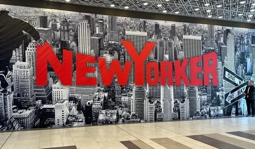
Объект в ТЦ «МЕГА» Екатеринбург
Читать статью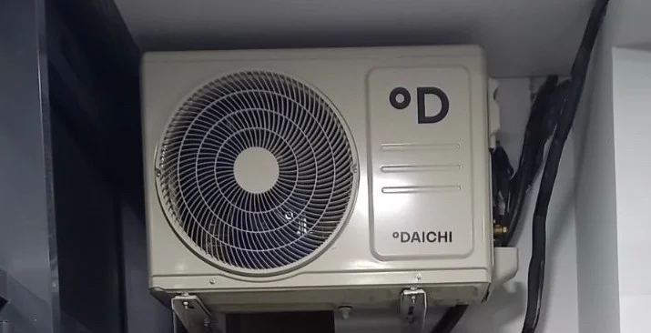
С радостью делимся с вами выполнением наших работ. На этом объект Kentatsu Kanami Inverter.
Читать статью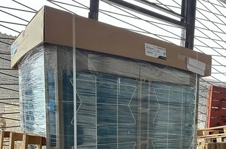
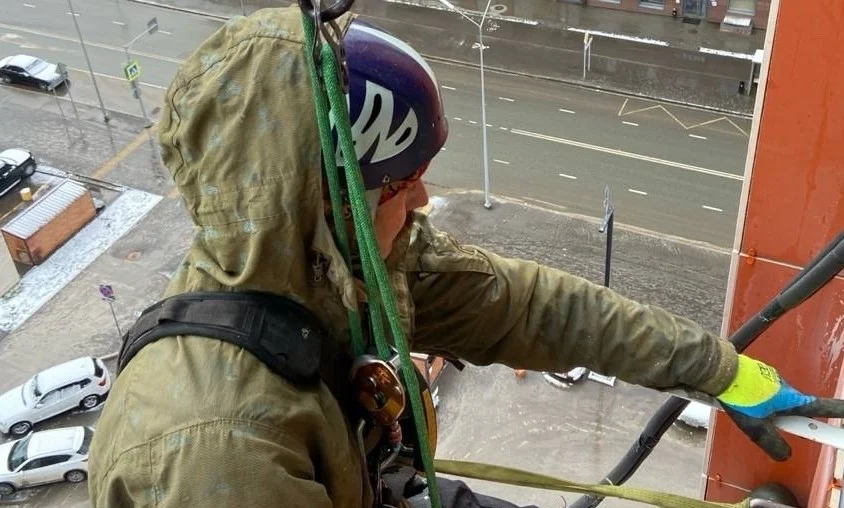
Установка кондиционера в привлечением альпиниста
Читать статью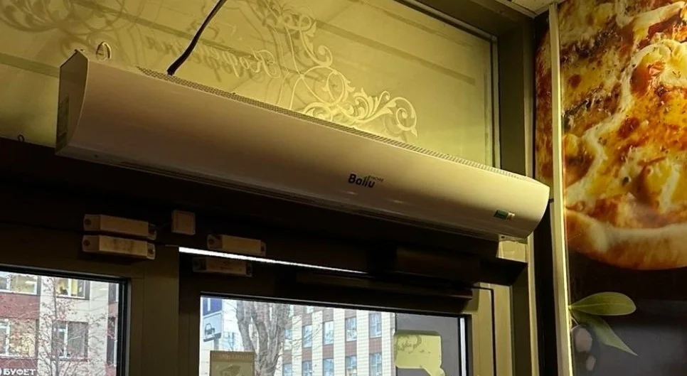
Мы рады сообщить о запуске новой услуги: замена и установка тепловых завес!
Читать статью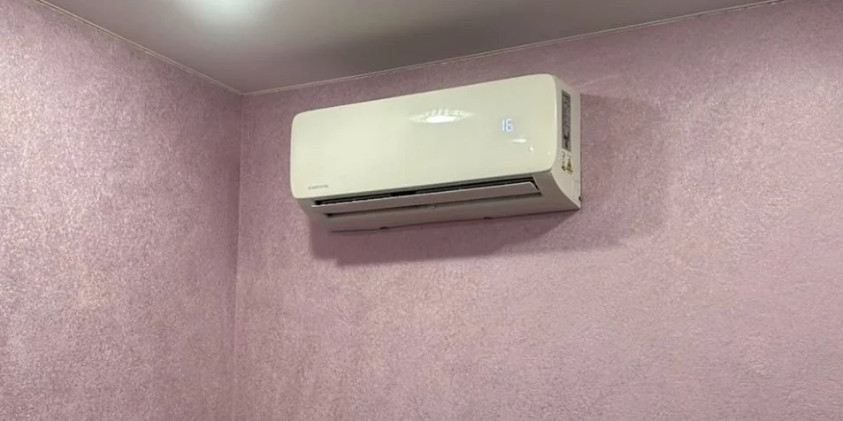
Декабрь — это время, когда многие из нас подводят итоги года и завершают начатые проекты.
Читать статью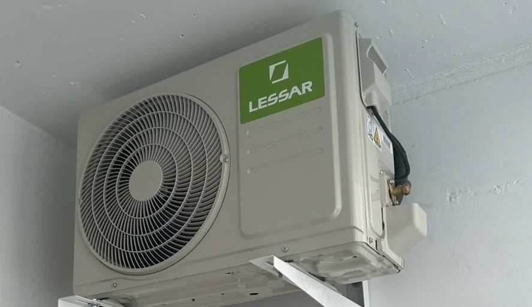
Мы стремимся предоставить вам только лучшие решения для создания идеальной атмосферы
Читать статьюПопробуйте другой запрос или выберите все публикации.